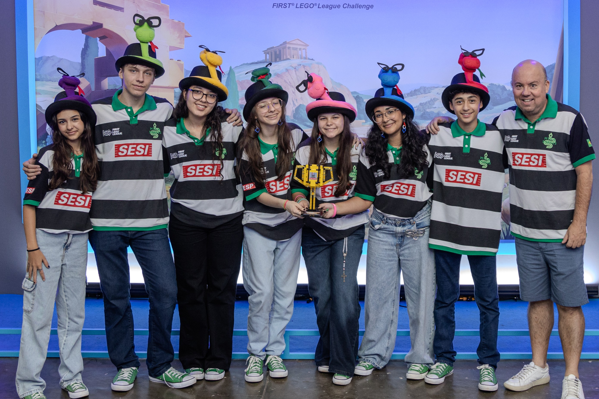
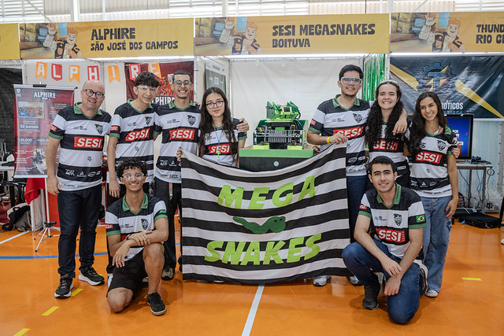
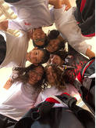
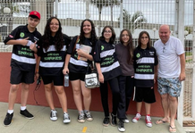
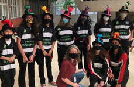
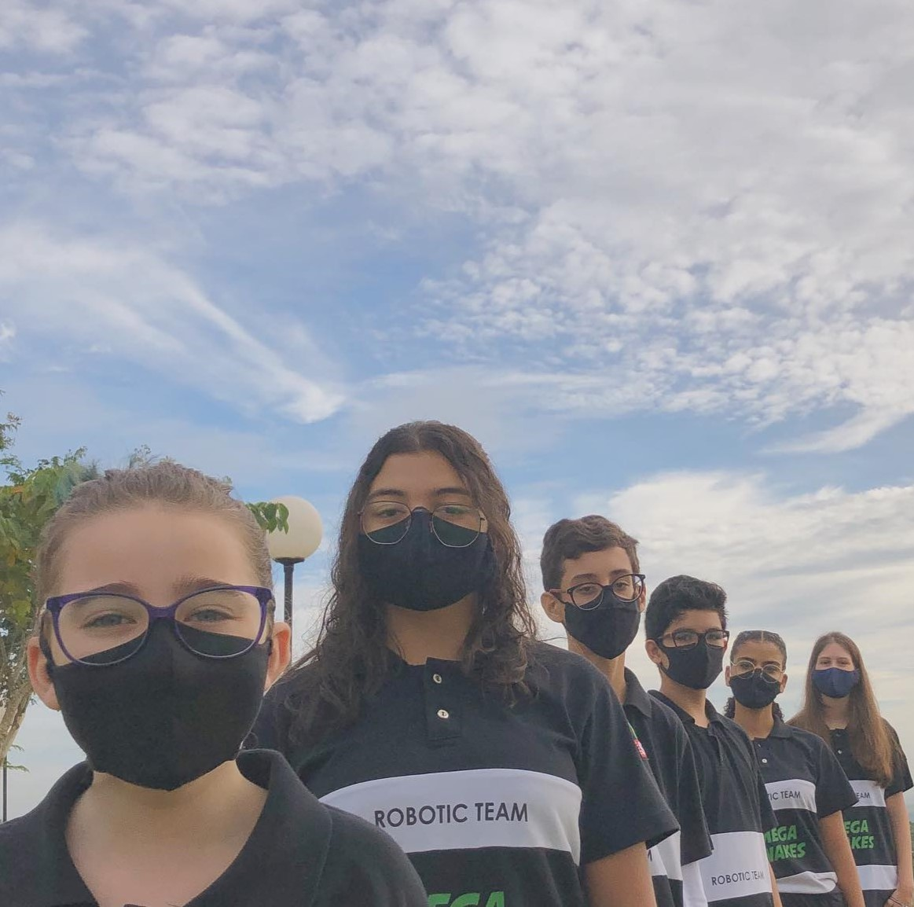
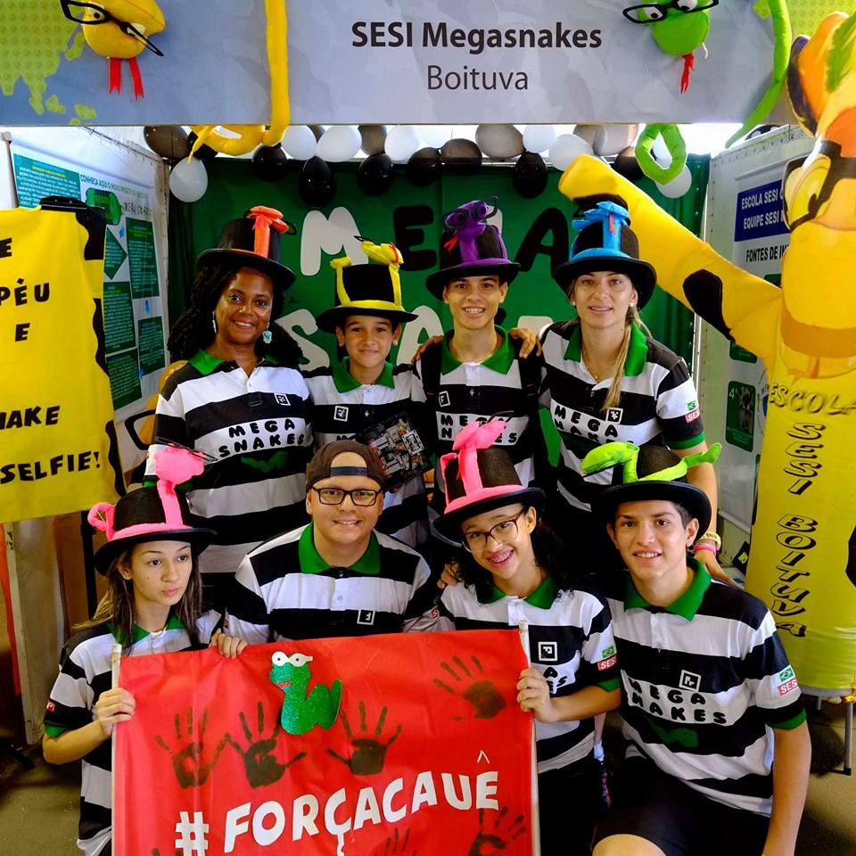
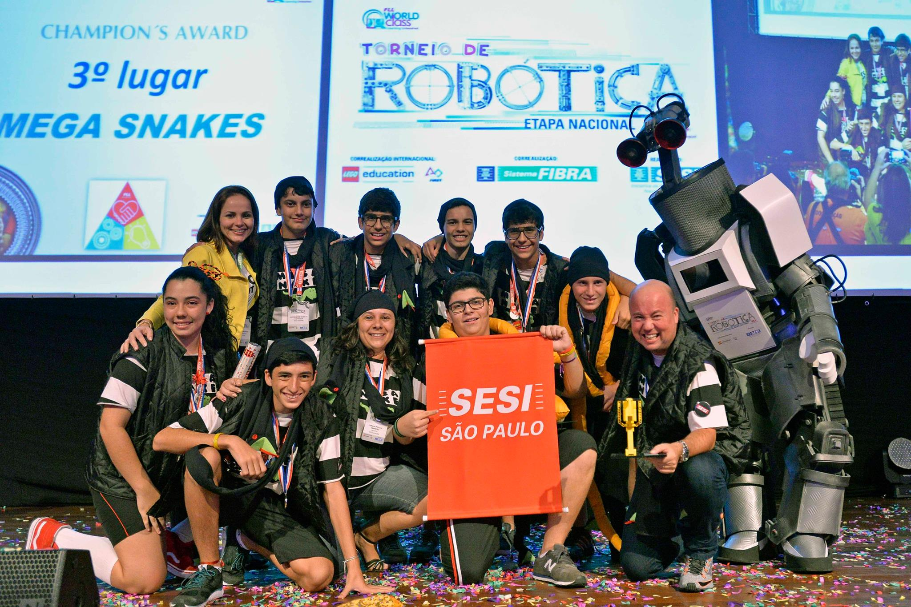
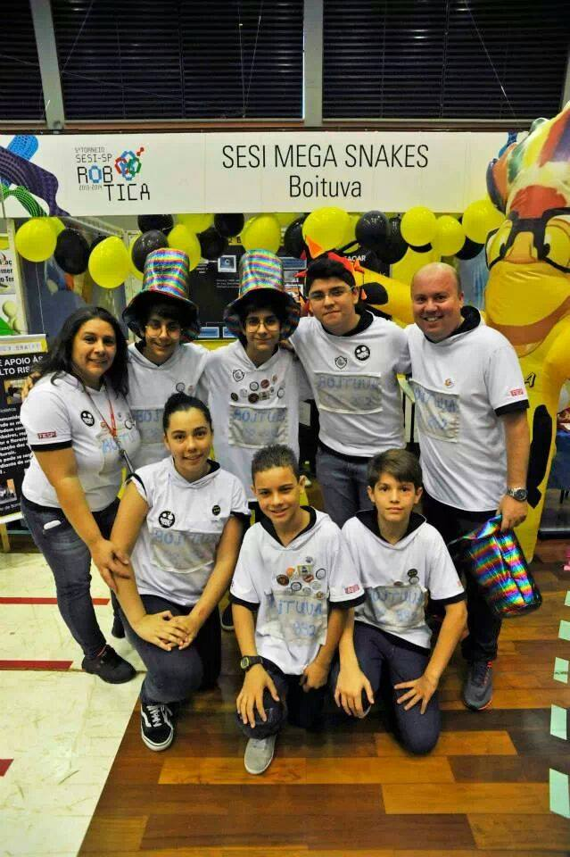
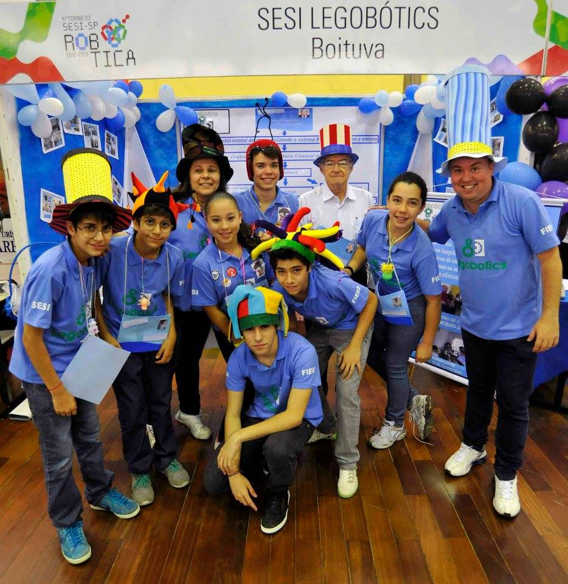

Cada temporada, uma nova história. Conheça os robôs e as conquistas de cada geração.
Em ordem cronológica, as equipes FLL e FTC que representaram a nossa organização.

Robô: XERIFE
A temporada UNEARTHED (2025/2026) da FIRST LEGO League (FLL) é centrada no tema da arqueologia, paleontologia e mineração. O desafio convida estudantes a explorar ferramentas, artefatos e locais de escavação do passado para imaginar soluções inovadoras para o futuro.

Robô: XERIFE
A temporada 2025-2026 da FIRST Tech Challenge, chamada DECODE, inspirada na arqueologia, desafia equipes a investigar "artefatos" (bolinhas) para desvendar mistérios, focando em inteligência artificial e engenharia.

Robô: SNAKITO
A temporada SUBMERGED (2024/2025) da FIRST LEGO League (FLL) é centrada no tema da exploração dos oceanos. O desafio convida estudantes a investigar ambientes subaquáticos, tecnologias de pesquisa e a vida marinha para imaginar soluções inovadoras que ajudem a explorar e proteger os mares.

Robô: SNAKITO
A temporada MASTERPIECE (2023/2024) da FIRST LEGO League (FLL) é centrada no tema das artes e criatividade. O desafio convida estudantes a investigar como a tecnologia pode ajudar artistas e criadores a compartilhar experiências artísticas, desenvolvendo soluções que ampliem o acesso à arte.

Robô: XERIFE
A temporada SUPERPOWERED (2022/2023) da FIRST LEGO League (FLL) é centrada no tema da energia. O desafio convida estudantes a explorar como a energia é produzida, armazenada, distribuída e utilizada, incentivando a criação de ideias inovadoras para melhorar o futuro energético.

Robô: XERIFE
A temporada CARGO CONNECT (2021/2022) da FIRST LEGO League (FLL) é centrada no tema do transporte e logística. O desafio convida estudantes a investigar como cargas são transportadas ao redor do mundo, explorando sistemas de entrega para criar soluções que tornem a movimentação de produtos mais eficiente e sustentável.

Robô: XERIFE
A temporada REPLAY (2020/2021) da FIRST LEGO League (FLL) é centrada no tema da atividade física e esportes. O desafio convida estudantes a explorar como as pessoas treinam, competem e se mantêm ativas, para imaginar soluções inovadoras que incentivem o movimento e o bem-estar.

Robô: XERIFE
A temporada CITY SHAPER (2019/2020) da FIRST LEGO League (FLL) é centrada no tema das cidades e espaços urbanos. O desafio convida estudantes a explorar problemas de infraestrutura, transporte e acessibilidade, para imaginar soluções inovadoras que ajudem a construir comunidades mais sustentáveis e inclusivas.

Robô: XERIFE
A temporada de 2019 da World Robot Olympiad (WRO) teve como tema central "Smart Cities" (Cidades Inteligentes). A final internacional foi realizada em Győr, Hungria, reunindo jovens de todo o mundo para resolver desafios focados na mobilidade urbana, tecnologia da informação e infraestrutura sustentável.

Robô: XERIFE
A temporada de 2018 da World Robot Olympiad (WRO) teve como tema central "Food Matters" (A Comida Importa). A final internacional foi realizada em Chiang Mai, Tailândia, reunindo jovens de todo o mundo para resolver desafios focados na produção e logística sustentável de alimentos.

Robô: XERIFE
A temporada ANIMAL ALLIES (2016/2017) da FIRST LEGO League (FLL) é centrada no tema da interação entre seres humanos e animais. O desafio convida estudantes a explorar como as pessoas e os animais podem ajudar uns aos outros, para imaginar soluções inovadoras que melhorem a convivência e o bem-estar de ambos.

Robô: XERIFE
A temporada TRASH TREK (2015/2016) da FIRST LEGO League (FLL) é centrada no tema da gestão de resíduos. O desafio convida estudantes a explorar o que acontece com o lixo e como ele é tratado, para imaginar soluções inovadoras que reduzam a produção de detritos e promovam a sustentabilidade.

Robô: XERIFE
A temporada WORLD CLASS (2014/2015) da FIRST LEGO League (FLL) é centrada no tema do futuro do aprendizado. O desafio convida estudantes a explorar como as pessoas buscam e compartilham conhecimentos no século XXI, para imaginar soluções inovadoras que tornem o ensino mais envolvente e eficaz para todos.

Robô:
A temporada NATURE'S FURY (2013/2014) da FIRST LEGO League (FLL) é centrada no tema dos desastres naturais. O desafio convida estudantes a explorar como as pessoas se preparam, se mantêm seguras e se recuperam de eventos climáticos extremos, para imaginar soluções inovadoras que ajudem a mitigar danos e salvar vidas.

Robô:
A temporada SENIOR SOLUTIONS (2012/2013) da FIRST LEGO League (FLL) é centrada no tema do envelhecimento ativo. O desafio convida estudantes a explorar os obstáculos que os idosos enfrentam no dia a dia, para imaginar soluções inovadoras que melhorem a qualidade de vida e a independência da terceira idade.